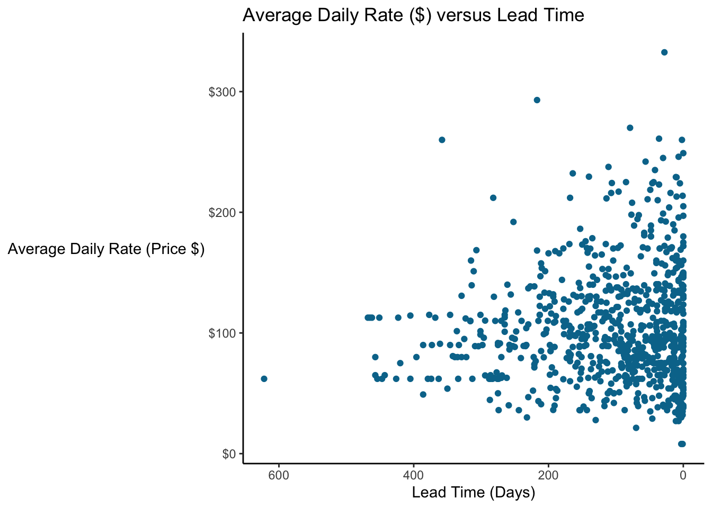

13 Multivariate Analysis

13.1 Heatmaps
Heatmaps display magnitude as color plotted on a two dimensional grid. In other words, you usually compare three variables:
Categorical OR Numerical variable on the X axis
Categorical OR Numerical variable on the X axis
USUALLY Numerical (potentially ordinal) variable as the fill color
Let’s build a heatmap showing a Numerical Variable (Average Daily Rate or Price) against two Nominal variables (booking channel and room class).
### Build a heatmap showing Average Daily Rate (price in $) by booking channel and room class
bookingdata %>%
ggplot(aes(x = assigned_room_type, y = market_segment, fill = adr)) +
geom_tile() +
labs(x = "Room Class",
y = "Booking Channel",
fill = "Price ($)",
title = "Average Daily Rate (Price) by Booking Channel and Room Class") +
theme_bw() +
theme(axis.line = element_blank(),
panel.border = element_blank())
Which room class generates the highest prices on average? And why does the online travel agent (Online TA) generate such higher prices than Offline Travel Agents?
Note that color is not one of the most “precise” preattentive attributes. In other words, it’s harder to compare two colors, especially if they’re right next to each other than, say, the length of a bar chart. Telling the magnitude of the difference is also very difficult. Looking at the figure above, how much higher is the mean price for G class rooms than D class rooms? Your eyes go back to the chart, to the legend, to the chart…hard to tell. A barchart would be easier…
13.2 Treemaps
13.3 Maps and Geographic Plots
13.4 Sankey Plots
Sankey plots are used to show flows through a network or a series of nodes. Sankey diagrams are named for Captain Matthew Sankey who mapped steam flow through a steam engine in a famous 1898 diagram, though they were in use before that. Perhaps the most famous diagram of this type was drawn in 1869 by Charles Minard and depicts Napoleon Bonaparte’s invasion to (and subsequent retreat from) Moscow. The width of the lines shows the strength (number of troops) in the army; tan lines represent advance and black lines represent retreat. The line graph on the bottom represents the temperature.

Sankey diagrams are useful for helping to understand flows and connections. For example, we could use it to model a customer conversion funnel:
# Load package
library(networkD3)
library(htmlwidgets)
library(htmltools)
# Create fake dataset showing customers through the conversion funnel
nodes <- tibble(names = c("Prospects", "Contacted", "Meeting", "Quote", "Sale", "Lost"))
links <- tibble(source = c(0, 0, 1, 1, 2, 2, 3, 3),
target = c(1, 5, 2, 5, 3, 5, 4, 5),
value = c(80, 20, 30, 50, 10, 20, 5, 5))
# Create plot
sankey <- sankeyNetwork(Links = links, Nodes = nodes, Source = 'source',
Target = 'target', Value = 'value', NodeID = 'names',
fontSize = 12,
nodeWidth = 30, iterations = 0)
# Add title
sankey <- htmlwidgets::prependContent(sankey, htmltools::tags$h4("Sales Funnel"))
# Display the plot
sankeySales Funnel
Or, we could look at our hotelbookings data. The dataset contains two variables related to the type/class of room people book, reserved_room_type and assigned_room_type. It looks like there are a lot of people in “A” rooms who get bumped up to “D” rooms!
# Create the list of nodes
sankey_bookingdata <- bookingdata %>%
filter(reservation_status == "Check-Out") %>%
select(reserved_room_type, assigned_room_type) %>%
group_by(reserved_room_type, assigned_room_type) %>%
summarise(value = n()) %>%
ungroup() %>%
mutate(source = paste0(reserved_room_type, " Reserved"),
target = paste0(assigned_room_type, " Assigned"))
sankey_nodes <- tibble(names = unique(sankey_bookingdata$source)) %>%
add_row(names = unique(sankey_bookingdata$target))
sankey_bookingdata <- sankey_bookingdata %>%
mutate(source = as.numeric(factor(reserved_room_type))-1, target = as.numeric(factor(assigned_room_type)) + 8)
# Create the plot
sankey <- sankeyNetwork(Links = sankey_bookingdata, Nodes = sankey_nodes, Source = 'source',
Target = 'target', Value = 'value', NodeID = 'names',
units = "Rooms", fontSize = 12,
nodeWidth = 30, iterations = 0)
# Add title
sankey <- htmlwidgets::prependContent(sankey, htmltools::tags$h4("Room Reservation vs Assignment"))
# Display plot
sankey